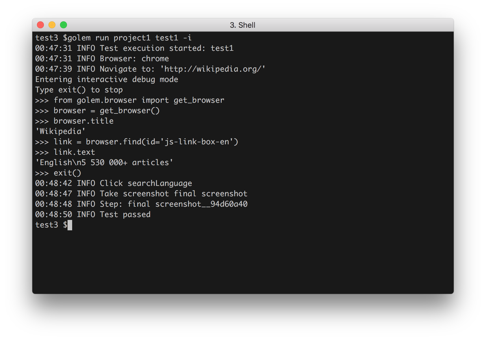

Interactive Mode¶
With Golem the execution of a test can be paused at any point and start an interactive console that has all the Golem commands at disposal. This is extremely useful when writing and debugging tests.
Debug action¶
To start the interactive console at any point of a test just add the 'debug' action. Example:
test.py
def test(data):
navigate('http://wikipedia.org/')
debug()
click(page.button)
capture('final screenshot')
When the test reaches the second step, the interactive console is going to start:

When the interactive console is terminated, the test will resume the execution from that point on.
Note
If the test is not run with the -i flag, the debug actions will be ignored
Quick Interactive Mode¶
It is posible to start a quick interactive mode by not providing a project and test to the run command:
>python golem.py run -i
This will start an interactive console with a clean slate.